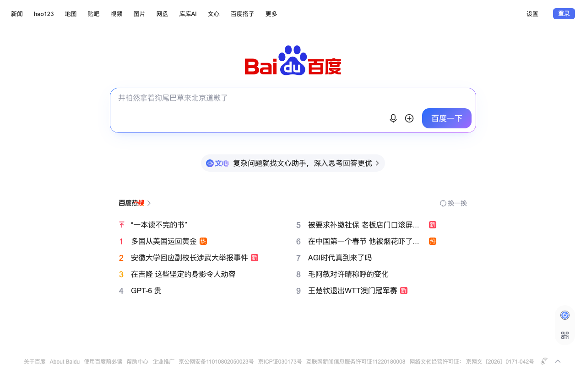

WebQA 网页测试报告
1/2 页通过 · 总耗时 6831ms · 2026-09-04 12:32:21
❌ 百度首页 加载 6141ms
https://www.baidu.com
| 结果 | 断言 | 说明 | 耗时 |
|---|
| ✅ | title_contains | 标题含'百度' 实际='百度一下，你就知道' | 5ms |
| ✅ | element_exists | 元素 #su 存在 | 2ms |
| ❌ | visible | #su 不可见 | 7ms |
| ✅ | element_count | a 数量=69 ≥10 | 21ms |
⚠ console: ['[等待超时] 选择器 #su 未出现']
⚠ 网络: ['NETERR https://psstatic.cdn.bcebos.com/basics/chat/afx%202_1750155358000.mp4']

✅ example.com 加载 1080ms
https://example.com
| 结果 | 断言 | 说明 | 耗时 |
|---|
| ✅ | title_contains | 标题含'Example' 实际='Example Domain' | 5ms |
| ✅ | text_contains | h1 文本含'Example' | 9ms |
doubao-eng webqa_engine v2 · 单会话复用提速 + 多维度自动捕获